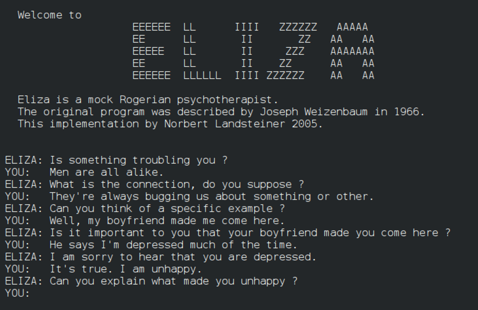

Home
What are AI assistants?
AI assistants are software programs that use language models to read a question and write an answer. The idea of talking to a computer in plain language is old, and Weizenbaum (1966) built ELIZA as a program for studying natural language communication between people and machines. Modern assistants rely on the Transformer, which Vaswani et al. (2017) introduced as a design based entirely on attention. They do not look facts up like a search engine does, because they generate likely text from patterns in huge collections of training data. In my opinion, they are best understood as powerful writing tools that still need a human to check what they say.
What students use them for
Explaining concepts
Students often ask assistants to explain hard ideas in simpler words, which helps when their class material is confusing. I think the best habit is asking for a second explanation when the first one fails, and then comparing it with your course materials.
Brainstorming
Assistants can quickly suggest essay ideas, project titles, or topics when a student is staring at a blank page. In my view these ideas are only a starting point, because if AI does everything it's not authentic.
Language practice
Students can write in a foreign language and instantly receive a translation and other helpful things related to studying that language. This is helpful, but I would double-check any unusual grammar advice with a teacher or another online source.
Coding help
Students use assistants to explain error messages, suggest fixes, and overall just help in developing a logical way to think in programming. But because AI can give confident but wrong output, any code from an assistant should be run and tested before it is trusted. I think copying code without understanding it is a bad habit that makes learning harder.
What they do well and what they don't
What they do well
They write fluent text, and the Transformer's attention mechanism is a big reason, because it lets a model relate words across the whole text. That design was also quicker to train than earlier approaches because its work can be done in parallel (Vaswani et al., 2017). Assistants answer instantly at any hour of the day. In my opinion, that constant availability is their biggest practical benefit for students.
What they don't do well
AI assistants also have real weaknesses. Sometimes they "hallucinate", which means they give an answer that sounds confident but is wrong or completely made up (Ji et al., 2023). They can also repeat unfair opinions and stereotypes, because they learn from huge amounts of text from the internet, and that text contains bias (Bender et al., 2021). Running them is not free either: training one very large model can produce about five times as much carbon dioxide as an average car over its whole lifetime (Strubell et al., 2019). This is why you should treat an AI answer as a first draft that you check, not as a fact you can copy.
How we got here
- 1966 - Weizenbaum's ELIZA imitates a psychotherapist using simple pattern matching and shows how easily people read understanding into a program (Weizenbaum, 1966).
- 2011 - Apple launches Siri with the iPhone 4S, which puts a voice assistant on a mainstream smartphone (Apple, 2011).
- 2014 - Amazon introduces the Echo smart speaker and its Alexa voice assistant, which brings voice assistants into the home (Amazon, 2014).
- 2017 - Vaswani et al. introduce the Transformer, the attention-based architecture behind today's assistants (Vaswani et al., 2017).
- 2022 - OpenAI releases ChatGPT in November, which makes generative AI chatbots available to the general public (OpenAI, 2022).
- 2023 - OpenAI releases GPT-4 in March, a more capable model that can also work with image inputs (OpenAI, 2023).

What you'll find on this site
This site explains in plain language how AI assistants work, starting with the How It Works page. The Compare page puts different assistants side by side, and The Test page shows what happened when I tried them myself. The Glossary defines the key technical terms, and the References page lists every source cited. I hope that by the end you can use these tools more critically and with more confidence.